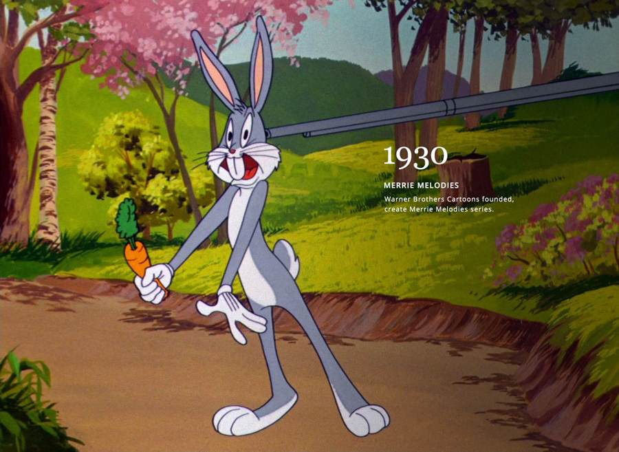
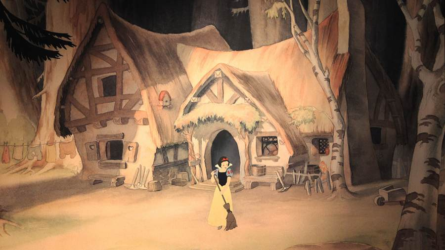
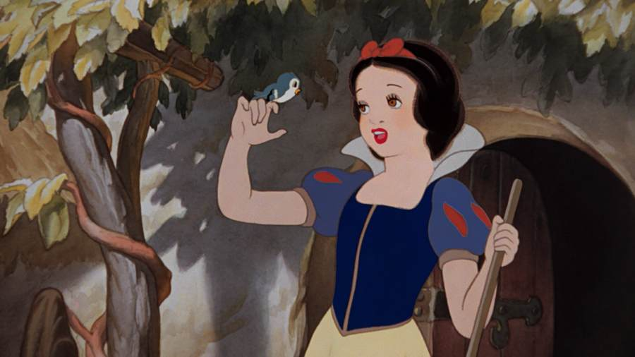

1930
From drawing to image
Drawing, color, and background emerge in one composition.
Standalone scroll study using the historical artwork. Scroll down to reveal the composition; reverse direction to revisit it.



Drawing, color, and background emerge in one composition.


The next visual moment leads into the film excerpt.
R04O standalone prototype. The historical desktop website remains unchanged. The Snow White reveal is provisional and will be refined separately.